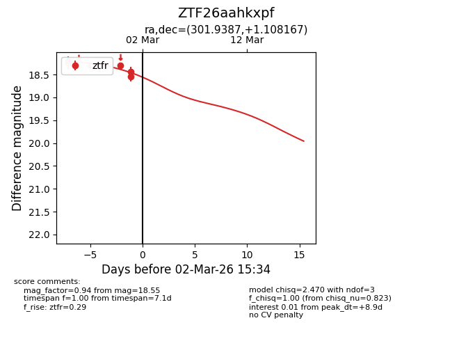
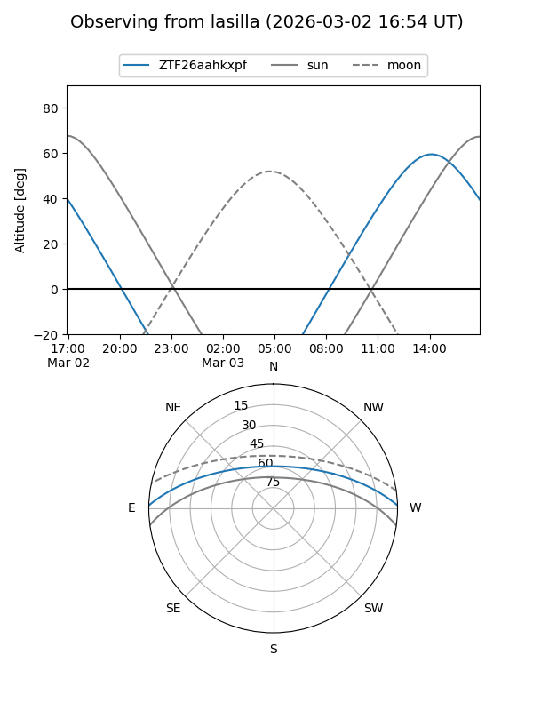
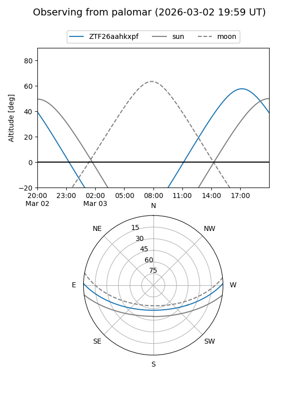
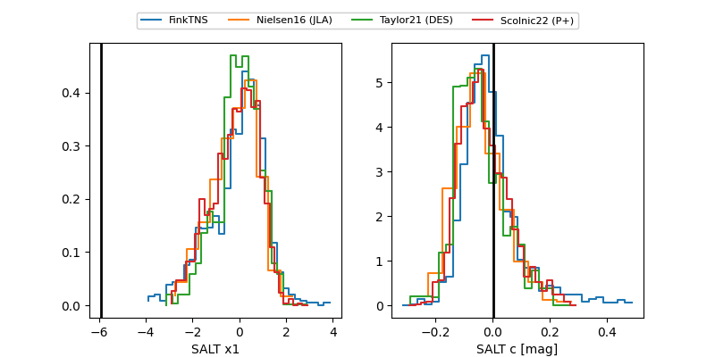

ZTF26aahkxpf
Target ZTF26aahkxpf at 2026-03-02 15:39
Aliases and brokers:
FINK: link
Lasair: link
ALeRCE: link
alt names
ZTF26aahkxpf (ztf,fink_ztf)
Coordinates:
equatorial (ra, dec) = 301.9387,+1.10817
equatorial (HMS+DMS) = 20:07:45.28,+01:06:29.40
galactic (l, b) = (42.9098,-16.38210)
Flags:
Photometry:
last ztfr=18.55
8 ztfr detections
Lightcurve

Visibility


Additional plots
